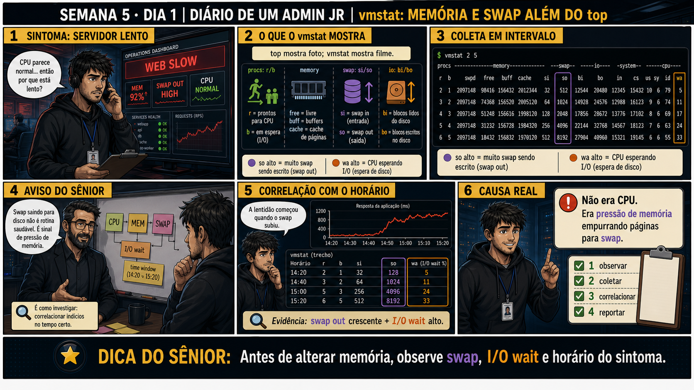

DIARIO DE UM ADMIN JR. | FASE 1 — LINUX, DO BÁSICO AO AVANÇADO
🔗 Conecta com a Semana 3, Dia 1: top e htop já te ensinaram a ler %CPU e %MEM.
Mas hoje o sintoma não bate com o que eles mostram — CPU parece normal, e a aplicação continua lenta. É hora
de descer um nível mais fundo: memória e swap, com vmstat.
🔓 Privilégio de hoje: diagnosticar pressão de memória com vmstat. Você ganha
o hábito de observar swap in/out antes de concluir que o problema é só CPU — top mostra a foto, vmstat mostra
o filme da memória.
Semana 5 · Dia 1 | Nível Júnior
vmstat: Memória e Swap Além do top
antes de alterar memória, observe swap, I/O wait e o horário do sintoma
ANTES DE ALTERAR, OBSERVE. DEPOIS DE ALTERAR, VALIDE.

1. O chamado
Um servidor está lento, mas o top mostra CPU em 12% de uso — normal. A
aplicação continua lenta mesmo assim. Se CPU não é o problema, o próximo lugar certo pra olhar é memória e
swap, com uma ferramenta que mostra o filme, não a foto.
💡 Passa o mouse nas palavras destacadas pra ver uma dica rápida — clica se quiser a explicação completa com analogia.
2. O sênior te conta
🧑🏫 antes dos termos técnicos, a história de hoje
Hoje um servidor estava lento, e o Júnior fez exatamente o que aprendeu na Semana 3: abriu o
top. Mas CPU mostrava 12% — praticamente ocioso. Ele ficou travado: "se não é CPU, o que
é?". Perguntei: "e memória? Já parou pra olhar swap?"
Rodamos vmstat 2 5 — cinco amostras, a cada dois segundos, não uma foto só. E ali estava o
que o top nunca mostra: a coluna so (swap out) subindo de 128 pra 256 pra 512 em poucos
ciclos, junto com wa (I/O wait) subindo de 6% pra 25%. O sistema estava empurrando memória
pro disco continuamente — é mandar caixas da mesa lotada pro depósito no porão, funciona, mas pegar de
volta é bem mais lento.
O Júnior quase cometeu outro erro comum: viu a coluna free baixa e achou que já tinha a
resposta. Expliquei: free baixo sozinho não significa nada de ruim — o Linux usa RAM livre pra cache o
tempo todo, de forma saudável. O sinal REAL de pressão é so subindo, não free caindo. Cache
pode ser liberado na hora; memória em swap não. Foi assim que aprendemos: duas métricas juntas contam a
história completa, uma sozinha engana.
3. Decodificador de conceitos
Clica em qualquer termo pra ver a definição completa e uma analogia do dia a dia:
4. Ferramentas e leitura da evidência
Coluna do vmstat
O que observar e por que importa
so (swap out)
Dados sendo empurrados pra disco por falta de RAM — valor alto e constante é alerta real.
wa (I/O wait)
Porcentagem de tempo que a CPU passa esperando disco responder — cresce junto com swap alto.
$ vmstat 2 5
procs -----------memory---------- ---swap-- -----io---- --system-- ------cpu-----
r b free buff cache si so bi bo in cs us sy id wa
1 0 120000 22000 410000 0 128 20 300 210 450 12 4 78 6
2 1 98000 21000 390000 32 256 80 700 260 520 10 5 70 15
1 1 76000 20000 360000 64 512 120 980 310 640 8 6 61 25
5. Laboratório guiado — pegue na mão, comando por comando
Segurança: execute os testes apenas em VM descartável e confirme nomes de discos, hosts e arquivos antes de cada comando.
Ação: Rode vmstat em estado normal e anote os valores de referência.
vmstat 2 5
Resultado esperado: valores baixos ou zero de si/so em estado saudável.
Por que fizemos isso: ter um "estado normal" anotado é o que permite reconhecer rápido quando um vmstat real está fora do padrão — sem baseline, você não sabe o que é anormal.
Cilada comum: rodar vmstat sem argumentos e olhar só a primeira linha — a primeira amostra do vmstat é sempre a média desde o boot, não o estado atual; as amostras seguintes são as reais.
Ação: Gere pressão de memória controlada e observe o vmstat mudar em tempo real.
stress-ng --vm 2 --vm-bytes 80% --timeout 30s
Resultado esperado: so subindo visivelmente durante o teste, confirmando o padrão de pressão.
Por que fizemos isso: ver so subir de propósito, sabendo a causa exata (o próprio teste), é o que fixa o reconhecimento desse padrão pra quando aparecer sem aviso num chamado real.
Cilada comum: usar --vm-bytes muito próximo de 100% numa VM pequena — pode travar a VM de teste; use uma margem de segurança.
🧑🏫 Aqui entra o Mentor (em breve): se você não tiver certeza se um padrão de vmstat é preocupante, este é o ponto onde o chat com o Sênior-IA vai ajudar a interpretar.
Ação: Compare free baixo (cache normal) com so alto (pressão real).
free -h
vmstat 2 3
Resultado esperado: distinção clara entre cache saudável e swap real.
Por que fizemos isso: ver os dois números lado a lado é o que deixa concreta a diferença entre "parece preocupante" (free baixo) e "é preocupante de verdade" (so subindo).
Cilada comum: concluir pressão de memória só pelo free baixo, como quase aconteceu na história de hoje — sempre confirme com so antes de reportar.
Ação: Encerre o teste de carga e confirme o retorno ao normal.
vmstat 2 5
Resultado esperado: so e wa retornando aos valores de referência do passo 1.
Por que fizemos isso: validar o "depois" contra o "antes" é o que prova que o sistema realmente voltou ao normal, não só a impressão de que voltou.
Cilada comum: encerrar o teste e não validar o retorno — sem essa checagem final, você não sabe se a pressão de memória realmente cessou.
Ação: Documente sintoma, ferramenta usada, evidência e validação pós-correção.
# não é comando de shell — é o registro final
# ex: "Sintoma: lento, CPU normal. Ferramenta: vmstat. Evidência: so subiu 128→512, wa 6%→25%. Causa: pressão de memória. Validado: retornou ao normal após teste."
Resultado esperado: registro completo reproduzindo o painel 6 da prancha de hoje.
Por que fizemos isso: registrar os valores numéricos exatos (não só "estava alto") é o que torna esse relatório útil pra comparação em investigações futuras.
Cilada comum: documentar "problema de memória" sem os números — sem essa evidência quantitativa, o relatório vira opinião, não diagnóstico.
6. Antes de ver as opções — tenta responder
🧠 Recall ativo: o que significam as colunas si e so do vmstat, e por
que valores altos ali são sempre sinal de alerta?
si (swap in) e
so (swap out)
mostram o sistema movendo memória pra/do disco — disco é ordens de magnitude mais lento que RAM, então
pressão de memória
real sempre aparece ali primeiro, mesmo quando CPU parece tranquila.
QUESTÃO 1 de 3
7. Questão comentada — clica numa alternativa
top mostra CPU em 12%, mas a aplicação continua lenta. Qual é o próximo passo
correto de investigação?
💡 Analogia do Sênior para Fixar: O comando 'vmstat 1' é o eletrocardiograma contínuo do servidor: exibe uma linha por segundo mostrando o ritmo da memória, blocos de I/O e trocas de contexto.
QUESTÃO 2 de 3 — cenário de erro real
7.1 so sobe de 128 pra 512 em poucos ciclos — o que isso indica?
Ao longo de três amostras do vmstat, so sobe de 128 para 256 e depois 512, enquanto
wa também sobe de 6% para 25%.
Qual é a leitura correta dessa tendência crescente?
💡 Analogia do Sênior para Fixar: A coluna 'si/so' (swap-in/swap-out) diferente de zero é o alarme de incêndio da RAM: avisa que a memória física esgotou e o sistema está usando o disco lento como muleta.
QUESTÃO 3 de 3 — detalhe que confunde todo iniciante
7.2 "free baixo no vmstat já significa falta de memória, certo?"
Um colega vê a coluna free caindo e conclui imediatamente que o servidor está sem memória
disponível.
Essa leitura isolada está correta?
💡 Analogia do Sênior para Fixar: A coluna 'r' (runnable processes) maior que o número de núcleos de CPU é a fila de espera do caixa: indica que há mais processos querendo rodar do que processadores livres.
8. Procedimento profissional
Se CPU parece normal mas o sintoma persiste, rode vmstat pra investigar memória.
Observe so (swap out) ao longo de várias amostras, não só uma leitura isolada.
Correlacione so alto com wa (I/O wait) subindo junto.
Correlacione o início do padrão com o horário exato do sintoma reportado.
Reporte pressão de memória com evidência numérica, não suposição.
Prevenção — o que evita repetir esse tipo de problema
Configure alertas de monitoramento baseados em so (swap out) sustentado, não só %CPU — a
dashboard padrão de muitos times olha só CPU/memória total, deixando pressão de swap invisível até virar
ticket. Documente no runbook a diferença free-baixo-normal vs. so-alto-real, pra ninguém mais confundir os
dois sob pressão.
9. Validação e encerramento
vmstat foi usado quando o top não explicava o sintoma sozinho.
so foi observado ao longo de várias amostras, não numa leitura isolada.
free baixo não foi confundido com pressão real de memória.
A causa foi correlacionada com o horário exato do sintoma reportado.
Rollback e limites
vmstat é somente leitura — não existe rollback. O limite real está em não
reiniciar serviços/servidor baseado só numa leitura de free baixo, que sozinha não prova nada.
💡 Sobre repetição espaçada: "duas métricas juntas contam a história completa"
já apareceu com %CPU/%MEM na Semana 3 — hoje é si/so + wa. O Anki vai conectar os dois.
10. Resposta final
Alternativa correta: B. Nesta aula, a decisão correta foi rodar
vmstat 2 5 pra investigar memória, swap e I/O. O ponto central do caso é este: antes de alterar
memória, observe swap, I/O wait e o horário do sintoma.
🔓 O que você desbloqueou hoje
Capacidade de diagnosticar pressão de memória além do que o top mostra. Amanhã
você aprende iostat — a diferença entre disco cheio e disco lento, dois problemas completamente diferentes.